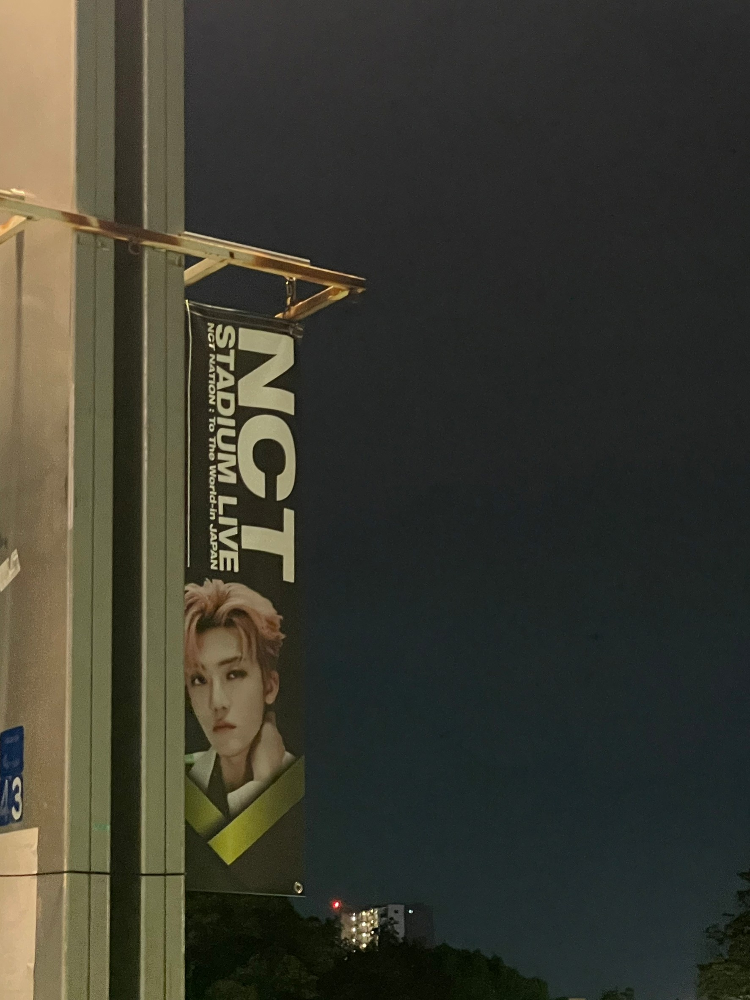
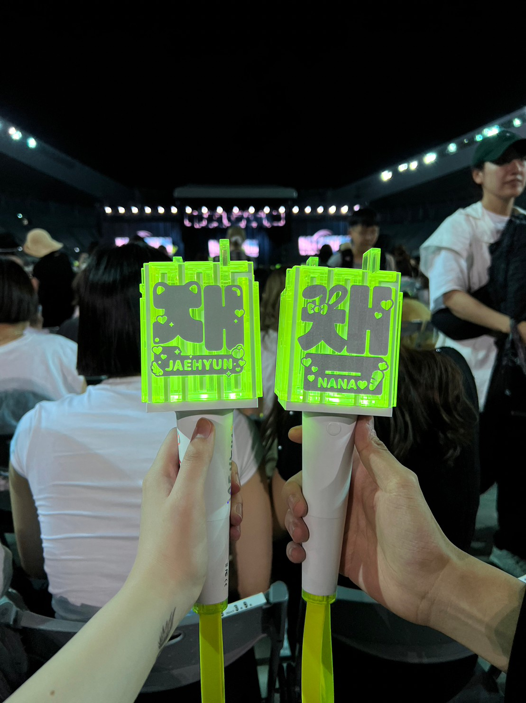

服が好きで、時間がある時はオンラインで服を見て、実際に休日は店舗に行き服を買っています！
また、コーヒーが好きで休日は1人だったりや友達なんかと、カフェや喫茶店をめぐっています。
福岡に来た際はぜひブルーマーシャンという喫茶店に行ってみてください！ MAP⇒
()
また
NCT⇐というKPOPのグループも好きで、１年に最低１回はライブに行って推しを拝んでいます^_^

KPOPが大好きで、男性グループはかなり好きなので気の合う方は是非お話ししましょう！
また、服も好きなのでおすすめのブランドなどがあったら教えてください！